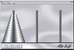

Serão apresentadas agora algumas aplicações de pilhas e de filas. A partir deste ponto, as pilhas e as filas, por serem estruturas abstratas, serão manipuladas sempre através das ope-rações vistas anteriormente (InsereFila, RetiraPilha, etc...) Desta forma o usuário não precisa saber qual foi a implementação utilizada em cada caso, e não tem outro acesso às estruturas utilizadas, que não sejam as operações pré-definidas.
Veremos as seguintes aplicações:
- manipulação de uma seqüência de caracteres
- avaliação de expressão totalmente parentetizada
- avaliação de expressão na forma pós-fixada
- conversão de expressão in-fixada para pós-fixada
- simulação de recursividade
- pilhas ou listas de uso geral
É dada uma seqüência de caracteres formada por letras e algarismos alternados, começando por uma letra. A função deve construir outra seqüência que contenha todas as letras da seqüência dada, na mesma ordem e posições originais, e todos os algarismos da seqüência dada, nas posições originais, mas em ordem invertida. Como exemplo são dadas abaixo uma seqüência de entrada e outra de saída correspondente:
Entrada: A 5 F 8 B 4 C 9 D 7
Saída: A 7 F 9 B 4 C 8 D 5
A função ManipulaCaracteres supõe que tenham sido definidos anteriormente os tipos tipofila e tipopilha. A seqüência original é lida do arquivo arq e a seqüência de saída é escrita na tela.
É dada uma expressão numérica em que todas as operações são cercadas por parêntesis, independentemente de sua prioridade, como por exemplo: ( 2 * ( 5 - 1 ) )
Supõem-se definidos anteriormente os tipos tipopilha e tipopilha2. A expressão é lida do arquivo arq. A função AvaliaExpressaoParentetizada utiliza a função ResolveOperacao, que retira da pilha de operadores o último operador e, em seguida, realiza a operação desejada e volta a inserir o resultado na pilha de números.
A função deve fazer a avaliação de uma expressão dada em forma pós-fixada. A expressão se encontra no arquivo arq. A função supõe que tenha sido definido o tipo tipopilha. A função AvaliaExpressaoPosfixada utiliza a função ResolveOperacao, que executa a operação desejada entre dois operandos e retorna o resultado.
A função ConversaoParaPosFixada lê de um arquivo arq1 uma expressão algébrica em forma in-fixada, e escreve na tela a mesma expressão, na forma pós-fixada. A função utiliza os tipos tipopilha e tipofila. A fila f1 armazena os operandos e a pilha p1 armazena os operadores e o sinal ‘(‘. A função Prioridade retorna a prioridade de execução de uma operação. A variável aux serve apenas para eliminar o caractere ‘(‘ quando este for encontrado no topo da pilha p1.
As pilhas podem ser utilizadas para simular a recursividade na resolução de certos problemas. É útil entender como as pilhas permitem a recursividade, pois é através delas que as linguagens implementam a recursividade.
Como exemplo tomemos a geração da seqüência de Fibonacci.
A seqüência de Fibonacci pode ser definida do seguinte modo:
fib (0) = 1 fib (1) = 1 fib (n) = fib (n-1) + fib (n-2) , para n > 1
A seqüência gerada de acordo com esta definição é a seguinte:
n 0 1 2 3 4 5 6 ...
fib 1 1 2 3 5 8 13 ...
A função abaixo calcula o n-ésimo termo, que fica armazenado na variável fib. Supõe-se defi-nido o tipo tipopilha.
Em todas as aplicações vistas até aqui, sempre se supõe definidos os tipos tipopilha e tipofila, que são pilhas ou filas contendo caracteres. É interessante a criação de pilhas ou filas de uso geral, nas quais é possível armazenar qualquer tipo de dado. Isto é possível na linguagem C, se utilizarmos um ponteiro apontando para void como informação contida na pilha ou na fila. Este ponteiro é de uso genérico, podendo apontar para qualquer tipo de estrutura.
Como exemplo de aplicação de uma pilha de uso geral, vamos resolver o problema das Torres de Hanói, simulando a recursividade através de uma pilha de uso geral.
Para resolver o problema de forma recursiva, deve-se raciocinar da seguinte forma: para levar n discos de A para B, basta levar os n – 1 discos superiores de A para C, em seguida levar o disco maior de A para B, e depois levar os n – 1 discos de C para B. No entanto, a operação de transferir n – 1 discos não é permitida pela própria regra do problema, e deve então ser abordada como uma chama da recursiva ao mesmo problema, mas com o grau de dificuldade reduzido de n para n – 1.
Definamos, então, o movimento de n discos, do pino A para o pino B, utilizando o pino C como auxiliar, através da função Hanoi (A,B,C,n). Para todo n > 1, esta função pode ser de-composta em outras três:
Hanoi (A,C,B,n-1)
Hanoi (A,B,C, 1 )
Hanoi (C,B,A,n-1)
As três chamadas são recursivas, mas a primeira e a terceira diminuem o número de discos, de n para n-1, enquanto a segunda constitui um caso trivial, em que o número de discos é 1, ou seja, neste caso o movimento do disco é efetuado.
Definamos um tipo registro que contenha os parâmetros de Hanoi, do seguinte modo:
struct reghanoi {Definamos todas as operações de manipulação de uma pilha cujo tipo denominaremos tipopilhageral, que é uma pilha cujo elemento constituinte é um ponteiro que aponta para void, do seguinte modo:
typedef struct tipopilhageral { {A função Hanoi pode então ser escrita, com a ajuda das funções EmpilhaHanoi e DesempilhaHanoi, que servem para criar ou eliminar os registros apontados pelos ponteiros da pilha de tipo tipopilhageral.